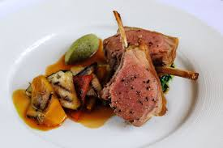

Lamb

Description
Tender racks of lamb go beautifully with the sunshine flavours of chargrilled vegetables and basil in this simple main course from Matthew Tomkinson.
This roast lamb recipe is a perfect alternative to traditional Sunday lunch.
Ingredients
-
Rack of English lamb
- 4 4-bone racks of English lamb
- olive oil
- salt
- pepper
-
Chargrilled vegetables
- 1 courgette, sliced length ways
- 1/2 aubergine, sliced length ways
- 1 red pepper, peeled and cut into 4
- 1 yellow pepper, peeled and cut into 4
- 50ml of extra virgin olive oil
- 1 garlic clove, crushed
- 4 sprigs of thyme, picked
- salt
-
Tapenade
- 100g of pitted green olives
- 10ml of extra virgin olive oil
-
Pesto
- 1 bunch of fresh basil
- 1/2 garlic clove
- 20g of Parmesan, grated
- 20g of pine nuts, toasted
- 30ml of extra virgin olive oil
- salt
- caster sugar
Steps
- Blend the pesto ingredients together until smooth in a food processor and place to one side.
- Then, for the tapenade, simply pulse the olives and oil together in blender until smooth but with a little texture remaining, then set to one side
- Preheat the oven to 200°C/Gas mark 6. In a large hot sauté pan, place a tablespoon of olive oil and then the seasoned lamb racks, fat side down.
- Allow to colour well and then turn over and colour all sides evenly. Return to being fat side down and place in the hot oven for 12–15 minutes.
- Remove from the oven and rest, reserving any resting juices to drizzle over before serving.
- While the lamb cooks, prepare the chargrilled vegetables. In a small pan warm 30ml of the olive with the garlic and thyme until it starts to sizzle.
- Remove from the heat and season with salt. Toss the vegetables with the remaining olive oil and season. In a very hot chargrill pan sear them until cooked.
- Cut into small pieces and place in the flavoured oil to marinade.
- To serve, place a pool of the pesto to one side of the serving plate and a quenelle of the tapenade on the other.
- Reheat the vegetables in the oven and place over the pesto. Carve each rack in half and drizzle with some of the resting juices.
- Serve.